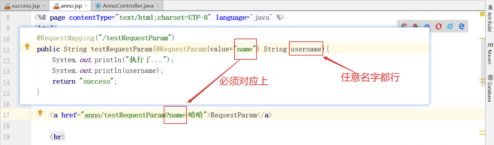

Spring Boot 的常用注解
1、@SpringBootApplication
这是 Spring Boot 最最最核心的注解，用在 Spring Boot 主类上，标识这是一个 Spring Boot 应用，用来开启 Spring Boot 的各项能力。
其实这个注解就是 @SpringBootConfiguration、@EnableAutoConfiguration、@ComponentScan 这三个注解的组合，也可以用这三个注解来代替 @SpringBootApplication 注解。看下 @SpringBootApplication 注解的源码，一切明了！
|
|
示例代码
|
|
2、@EnableAutoConfiguration
允许 Spring Boot 自动配置注解，开启这个注解之后，Spring Boot 就能根据当前类路径下的包或者类来配置 Spring Bean，即尝试根据你添加的jar依赖自动配置你的Spring应用。
例如：当前类路径下有 Mybatis 这个 JAR 包，MybatisAutoConfiguration 注解就能根据相关参数来配置 Mybatis 的各个 Spring Bean；如果你的classpath下存在HSQLDB，并且你没有手动配置任何数据库连接beans，那么我们将自动配置一个内存型（in-memory）数据库。
你可以将 @EnableAutoConfiguration 或者 @SpringBootApplication 注解添加到一个 @Configuration 类上来选择自动配置。如果发现应用了你不想要的特定自动配置类，你可以使用 @EnableAutoConfiguration 注解的排除属性来禁用它们。
3、@Configuration
这是 Spring 3.0 添加的一个注解，用来代替 applicationContext.xml 配置文件，所有这个配置文件里面能做到的事情都可以通过这个注解所在类来进行注册。
- 如果有些第三方库需要用到xml文件，建议仍然通过
@Configuration类作为项目的配置主类，对于第三方库可以使用@ImportResource注解加载xml配置文件。 - 可以用
@Import注解用来引入额外的一个或者多个@Configuration修饰的配置文件类。
4、@SpringBootConfiguration
这个注解就是 @Configuration 注解的变体，只是用来修饰是 Spring Boot 配置而已，或者可利于 Spring Boot 后续的扩展。源码如下。
|
|
5、@ComponentScan
这是 Spring 3.1 添加的一个注解，用来代替配置文件中的 component-scan 配置，开启组件扫描，即自动扫描包路径下的 @Component 注解进行注册 bean 实例到 context 中。
另外，@ComponentScans 是可重复注解，即可以配置多个，用来配置注册不同的子包。
|
|
6、@Conditional
这是 Spring 4.0 添加的新注解，用来标识一个 Spring Bean 或者 Configuration 配置文件，当满足指定的条件才开启配置。
7、@ConditionalOnBean
组合 @Conditional 注解，当容器中有指定的 Bean 才开启配置。
8、@ConditionalOnMissingBean
组合 @Conditional 注解，和 @ConditionalOnBean 注解相反，当容器中没有指定的 Bean 才开启配置。
9、@ConditionalOnClass
组合 @Conditional 注解，当容器中有指定的 Class 才开启配置。
10、@ConditionalOnMissingClass
组合 @Conditional 注解，和 @ConditionalOnMissingClass 注解相反，当容器中没有指定的 Class 才开启配置。
11、@ConditionalOnWebApplication
组合 @Conditional 注解，当前项目类型是 WEB 项目才开启配置。
当前项目有以下 3 种类型。
|
|
12、@ConditionalOnNotWebApplication
组合 @Conditional 注解，和 @ConditionalOnWebApplication 注解相反，当前项目类型不是 WEB 项目才开启配置。
13、@ConditionalOnProperty
组合 @Conditional 注解，当指定的属性有指定的值时才开启配置。
14、@ConditionalOnExpression
组合 @Conditional 注解，当 SpEL 表达式为 true 时才开启配置。
15、@ConditionalOnJava
组合 @Conditional 注解，当运行的 Java JVM 在指定的版本范围时才开启配置。
16、@ConditionalOnResource
组合 @Conditional 注解，当类路径下有指定的资源才开启配置。
17、@ConditionalOnJndi
组合 @Conditional 注解，当指定的 JNDI 存在时才开启配置。
18、@ConditionalOnCloudPlatform
组合 @Conditional 注解，当指定的云平台激活时才开启配置。
19、@ConditionalOnSingleCandidate
组合 @Conditional 注解，当指定的 class 在容器中只有一个 Bean，或者同时有多个但为首选时才开启配置。
20、@ConfigurationProperties
用来加载额外的配置（如 .properties 文件），可用在 @Configuration 注解类，或者 @Bean 注解方法上面。
21、@EnableConfigurationProperties
一般要配合 @ConfigurationProperties 注解使用，用来开启对 @ConfigurationProperties 注解配置 Bean 的支持。
22、@AutoConfigureAfter
用在自动配置类上面，表示该自动配置类需要在另外指定的自动配置类配置完之后。
如 Mybatis 的自动配置类，需要在数据源自动配置类之后。
|
|
23、@AutoConfigureBefore
这个和 @AutoConfigureAfter 注解使用相反，表示该自动配置类需要在另外指定的自动配置类配置之前。
24、@Import
这是 Spring 3.0 添加的新注解，用来导入一个或者多个 @Configuration 注解修饰的类，这在 Spring Boot 里面应用很多。
25、@ImportResource
这是 Spring 3.0 添加的新注解，用来导入一个或者多个 Spring 配置文件，这对 Spring Boot 兼容老项目非常有用，因为有些配置无法通过 Java Config 的形式来配置就只能用这个注解来导入。
26、@Service
一般用于修饰service层的组件
27、@Repository
使用 @Repository 注解可以确保DAO或者repositories提供异常转译，这个注解修饰的 DAO 或者 repositories 类会被 ComponetScan 发现并配置，同时也不需要为它们提供XML配置项。
28、@Bean
用@Bean标注方法等价于XML中配置的bean。相当于XML中的，放在方法的上面，而不是类，意思是产生一个bean，并交给spring管理。
29、@Value
注入Spring boot application.properties 配置的属性的值。示例代码：
|
|
30、@Inject
等价于默认的 @Autowired ，只是没有required属性
31、@AutoWired
自动导入依赖的bean。byType方式。把配置好的Bean拿来用，完成属性、方法的组装，它可以对类成员变量、方法及构造函数进行标注，完成自动装配的工作。当加上（required=false）时，就算找不到bean也不报错。
32、@Qualifier
当有多个同一类型的Bean时，可以用 @Qualifier("name") 来指定。
与 @Autowired 配合使用。
@Qualifier 限定描述符除了能根据名字进行注入，但能进行更细粒度的控制如何选择候选者，具体使用方式如下：
|
|
Spring MVC常用注解
1、@Controller
用于定义控制器类，在spring 项目中由控制器负责将用户发来的URL请求转发到对应的服务接口（service层），一般这个注解在类中，通常方法需要配合注解@RequestMapping。示例代码：
|
|
2、@RequestMapping
@RequestMapping("/path") 表示该控制器处理所有 “/path” 的 URL请求。RequestMapping是一个用来处理请求地址映射的注解，可用于类或方法上。
用于类上，表示类中的所有响应请求的方法都是以该地址作为父路径。该注解有六个属性：
- params：指定request中必须包含某些参数值是，才让该方法处理。
- headers：指定request中必须包含某些指定的header值，才能让该方法处理请求。
- value：指定请求的实际地址，指定的地址可以是URI Template 模式
- method：指定请求的method类型， GET、POST、PUT、DELETE等
- consumes：指定处理请求的提交内容类型（Content-Type），如application/json,text/html;
- produces：指定返回的内容类型，仅当request请求头中的(Accept)类型中包含该指定类型才返回
3、@RequestParam
放在参数前，表示只能接收参数a=b格式的数据，即 Content-Type 为 application/x-www-form-urlencoded 类型的内容。
name的别名是value，value的别名是name。二者皆可，并且开发中两个都能获得参数，获得一样的结果。源码：
|
|
示例：
|
|

4、@RequestBody
放在参数前，表示参数从 request body 中获取，而不是从地址栏获取，所以这肯定是接收一个POST请求的非a=b格式的数据，即 Content-Type 不为 application/x-www-form-urlencoded 类型的内容。
5、@ResponseBody
表示该方法的返回结果直接写入HTTP response body中，一般在异步获取数据时使用，用于构建RESTful的api。在使用 @RequestMapping 后，返回值通常解析为跳转路径，加上 @Responsebody 后返回结果不会被解析为跳转路径，而是直接写入 HTTP response body 中。
比如异步获取json数据，加上@responsebody后，会直接返回json数据。该注解一般会配合@RequestMapping一起使用。示例代码：
|
|
6、@RestController
用于标注控制层组件(如struts中的action)，@ResponseBody 和 @Controller 的合集，表示@Controller标识的类里面的所有返回参数都放在response body里面。
示例代码：
|
|
7、@PathVariable
路径绑定变量，用于绑定restful路径上的变量。
|
|
8、@RequestHeader
放在方法参数前，用来获取request header中的参数值。
9、@CookieValue
放在方法参数前，用来获取request header cookie中的参数值。
10、GetMapping PostMapping PutMapping..
*Mapping 的是 Spring4.3 加入的新注解，表示特定的请求类型路径映射，而不需要写 RequestMethod 来指定请求类型。
|
|
JPA注解
1、@Entity
|
|
一般用于jpa这两个注解一般一块使用，但是如果表名和实体类名相同的话，@Table 可以省略。
2、@MappedSuperClass
@MappedSuperClass：用在确定是父类的entity上。父类的属性子类可以继承。
3、@NoRepositoryBean
@NoRepositoryBean：一般用作父类的repository，有这个注解，spring不会去实例化该repository。
4、@Column
@Column：如果字段名与列名相同，则可以省略。
5、@Id
@Id：表示该属性为主键。
6、@GeneratedValue
|
|
使用 @GeneratedValue 注释自动生成的实体标识可以是数值类型字段如 byte、short、int、long等，或者它们对应的包装器类型 Byte、Short、Integer、Long等，也可以是字符串类型。
GenerationType有四种生成策略
- TABLE：使用一个特定的数据库表格来保存主键。
- SEQUENCE：根据底层数据库的序列来生成主键，条件是数据库支持序列。
- IDENTITY：主键由数据库自动生成（主要是自动增长型）
- AUTO：主键由程序控制。
表示主键生成策略是sequence（可以为Auto、IDENTITY、native等，Auto表示可在多个数据库间切换），指定sequence的名字是repair_seq。
7、@SequenceGeneretor
@SequenceGeneretor(name = "repair_seq", sequenceName = "seq_repair", allocationSize = 1)：name为sequence的名称，以便使用，sequenceName为数据库的sequence名称，两个名称可以一致。
8、@Transient
@Transient：表示该属性并非一个到数据库表的字段的映射，ORM框架将忽略该属性。如果一个属性并非数据库表的字段映射，就务必将其标示为 @Transient，否则，ORM框架默认其注解为@Basic。@Basic(fetch=FetchType.LAZY)：标记可以指定实体属性的加载方式。
9、@JsonIgnore
@JsonIgnore：作用是json序列化时将Java bean中的一些属性忽略掉,序列化和反序列化都受影响。
10、@JoinColumn
@JoinColumn(name="loginId")：一对一：本表中指向另一个表的外键。一对多：另一个表指向本表的外键。
11、@OneToOne、@OneToMany、@ManyToOne
@OneToOne、@OneToMany、@ManyToOne：对应hibernate配置文件中的一对一，一对多，多对一。